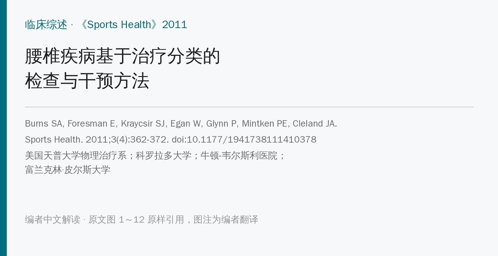
🔖原文信息（编者中文重排）
📚 文献信息
▪ Burns SA, Foresman E, Kraycsir SJ, Egan W, Glynn P, Mintken PE, Cleland JA. A treatment-based classification approach to examination and intervention of lumbar disorders. Sports Health. 2011;3(4):362-372. doi:10.1177/1941738111410378
▪ 中文题目：腰椎疾病基于治疗分类的检查与干预方法
▪ 作者单位：美国天普大学物理治疗系（费城）；牛顿-韦尔斯利医院；科罗拉多大学（奥罗拉）；富兰克林·皮尔斯大学（新罕布什尔州）
▪ 研究类型：叙述性临床综述（检索 PubMed、CINAHL、PEDro、SPORTDiscus，截至 2010 年 12 月）
运动员腰痛很常见。美国大学生运动里，男子摔跤、美式橄榄球和女子体操的腰部损伤率最高，每 1000 次运动暴露约 0.36～0.49 次，大多数发生在比赛中。
可这些损伤大多被诊断为“非特异性”：挫伤、扭伤、拉伤。影像帮不上太多忙，运动员的 MRI 异常本来就多，跟症状常对不上；不少异常出现在生长突增之后，可能只是正常发育或老化的一部分。影像真正有用的是排查骨折、马尾综合征、肿瘤、强直性脊柱炎和感染这些严重问题。
那排除了严重问题之后，该给哪个运动员做什么？这篇由 Cleland、Mintken 等作者撰写的综述，把 Delitto 1995 年提出、Fritz 等人逐步完善的基于治疗分类（treatment-based classification，TBC）体系整理成了一套给运动员用的流程：先筛查、再分期、最后按体征配干预。里面的检查方法都配了照片，很适合当成临床速查。
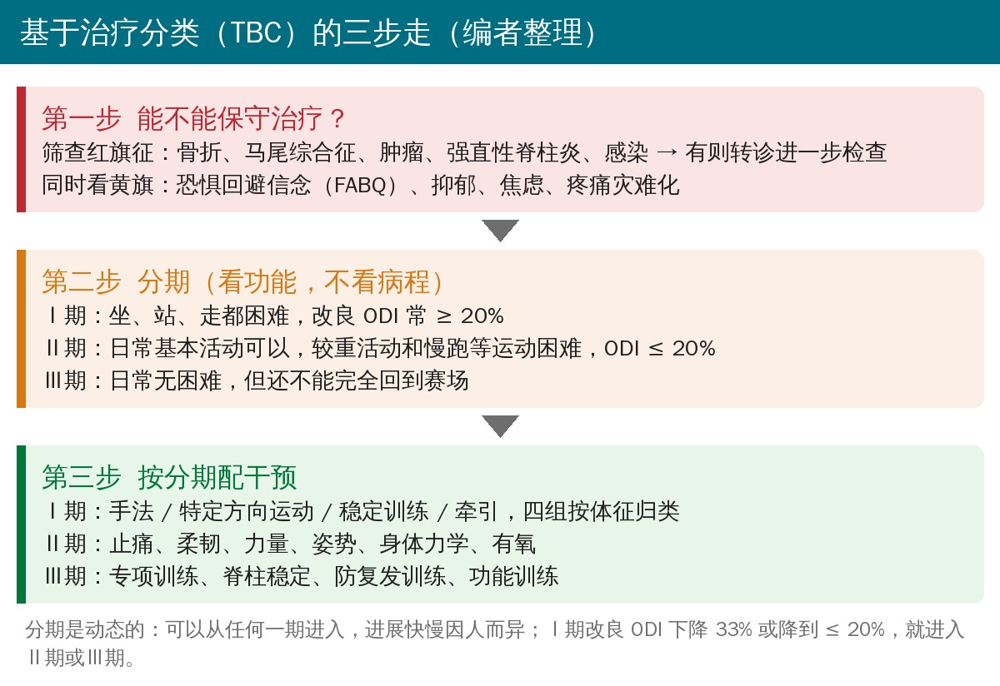
用病史问卷、自评量表和疼痛量表筛查。重点问：不明原因体重下降、转移性肿瘤病史、免疫抑制性疾病、夜间痛、大小便功能改变。所有阳性回答都要跟运动员核实，必要时做相应系统的全面筛查。
原文表 1 腰痛的鉴别诊断（编者翻译）
| 疾病 | 需要警惕的表现 |
|---|---|
| 脊柱骨折 | 重大外伤；压缩性骨折：老年或可能骨质疏松的运动员轻微外伤或用力搬举、长期使用糖皮质激素；峡部应力性骨折：年轻运动员持续腰痛，从事反复过伸的项目（体操、摔跤、举重） |
| 马尾综合征 | 鞍区麻木；近期出现膀胱功能障碍（尿潴留、尿频、充溢性尿失禁）；下肢严重或进行性神经功能缺损 |
| 肿瘤 | 年龄 50 岁以上；既往肿瘤史；不明原因体重下降；卧床休息不能缓解 |
| 强直性脊柱炎 | 夜间因腰痛起床；晨僵；男性；发病年龄 < 35 岁；平躺不能缓解；运动和活动后缓解 |
| 脊柱感染 | 近期发热、寒战；近期细菌感染、静脉吸毒或免疫抑制（激素、器官移植、HIV） |
原表注明改编自 Cleland 和 Fritz 2007 年美国物理治疗协会专著。
作者特别提醒：发育期脊柱比较脆弱，年轻运动员如果是伸展相关的腰痛，要评估有没有腰椎应力性损伤，包括椎弓峡部裂和椎体滑脱。
• 最关键的是恐惧回避信念，用恐惧回避信念问卷（FABQ）评估，分工作和体力活动两个分量表
• FABQ 工作分量表满分 42，> 29 提示恐惧回避信念高，可能影响预后；体力活动分量表满分 24
• FABQ 对工伤相关腰痛的长期失能预测最好，但在运动员里还没有研究
• 其他黄旗：抑郁、焦虑、疼痛灾难化。出现时可能要结合认知行为治疗，或转介心理健康专业人员
传统上按病程分急性、亚急性、慢性，但时间切点是人为定的，对选干预帮助不大。TBC 改为按当前的功能水平和失能程度分期。这是个动态体系：运动员可以从任何一期进入，进展速度也因人而异。分期主要靠两个自评工具：改良 Oswestry 功能障碍指数（ODI）和数字疼痛评分（NPRS）。
原文表 2 自评问卷的说明和测量学特性（编者翻译）
| 量表 | 说明 | 信度 | MDC 和 MCID |
|---|---|---|---|
| 改良 ODI | 10 题腰痛专用量表，涉及疼痛和功能受限 | ICC = 0.90 | MDC 4～10 分；MCID 6 个百分点 |
| FABQ | 评估对活动及其对腰痛影响的信念；分工作、体力活动两个分量表 | 0.64～0.80 | MDC：工作 12 分，体力活动 9 分 |
| NPRS | 0～10 共 11 级，按严重程度给疼痛打分 | 0.76 | MCID 2 分 |
ICC：组内相关系数；MDC：最小可测变化；MCID：最小临床重要差异。
• ODI 0%～100%，分越高越失能；变化 6 个百分点有临床意义，下降 50%可作为治疗成功的标准
• NPRS 问最近 24 小时最好、最差和平均疼痛，变化 2 分有临床意义
原文表 3 分类的三个分期（编者翻译）
| Ⅰ期 | Ⅱ期 | Ⅲ期 | |
|---|---|---|---|
| 日常活动 | 站不到 15 分钟；坐不到 30 分钟；走不到 1/4 英里（约 400 m） | 超过Ⅰ期所有标准；基本功能活动有困难（如吸尘、搬东西） | 能完成基本功能活动；不能完全参加运动 |
| 改良 ODI 典型分数 | ≥ 20% | ≤ 20% | ≤ 20% |
原表注明改编自 Delitto 等和 Brennan 等。
• Ⅰ期：ODI、NPRS 都高，坐、站、走等基本日常活动受限。按体征归到手法、特定方向运动、稳定训练、牵引 4 组中的 1 组或几组。ODI 下降 33% 或降到 ≤ 20%，就进入Ⅱ期或Ⅲ期
• Ⅱ期：基本日常活动没什么困难，较重的日常活动和运动（如慢跑）有困难。干预包括止痛、柔韧性、力量、姿势、身体力学和有氧训练
• Ⅲ期：日常活动无困难，但还不能完全回到赛场，可能能训练或比赛，但发挥受限；反复腰痛的运动员也常在这一期。干预包括专项训练、脊柱稳定、防复发训练和功能训练。作者认为这一期对运动员可能最重要，因为它决定能否回到赛场
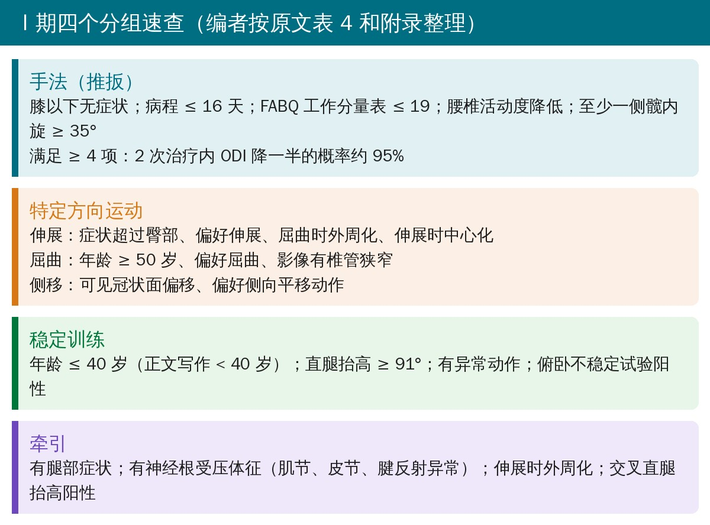
临床指南对推扳手法（thrust manipulation）的推荐一直有限，作者认为原因有两个：以往研究把推扳、非推扳和软组织技术混在一起，而且纳入的人群太杂。腰痛本身是异质性很大的问题，所以需要先找出谁最可能受益。
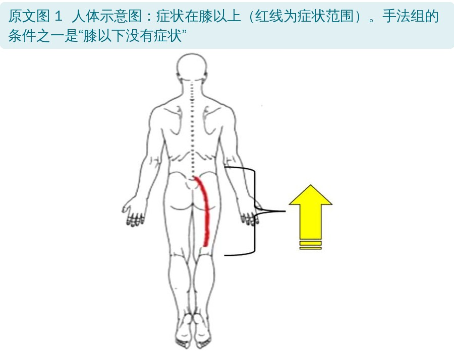
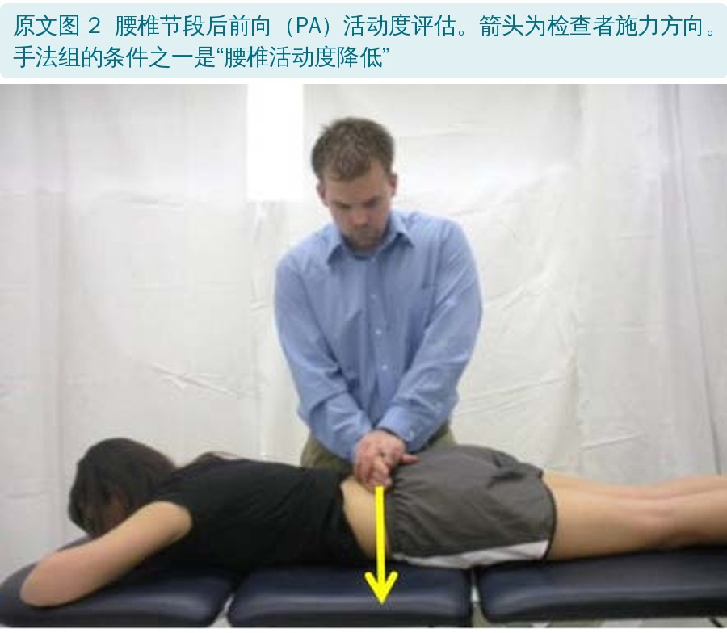
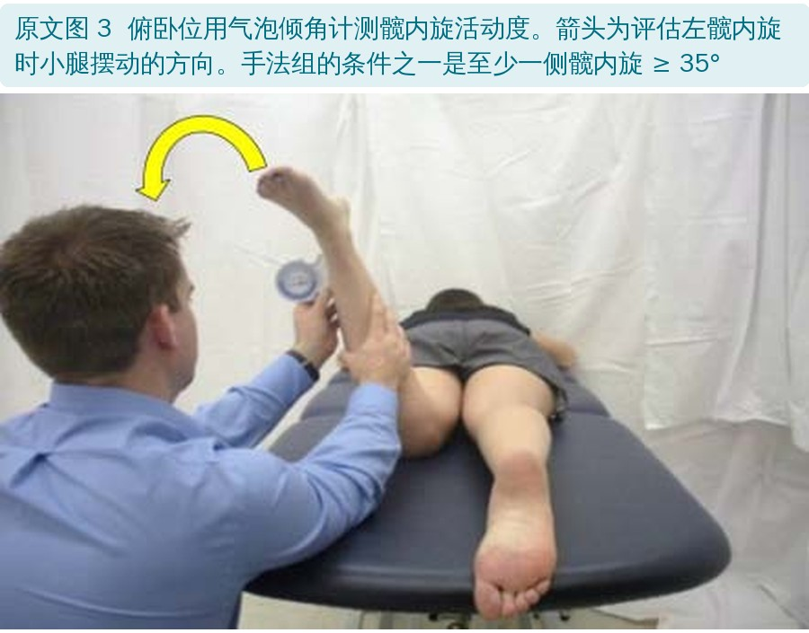
临床预测规则的来历：
• 推导研究：71 名患者接受腰骨盆推扳手法加主动活动度练习，以 ODI 下降 ≥ 50% 为成功，成功率 45%。回归分析得出 5 个预测因素：病程 ≤ 16 天、膝以下无症状、FABQ 工作分量表 ≤ 19、至少一侧髋内旋 35°、腰椎活动度降低
• 满足 ≥ 4 项的人，2 次治疗内 ODI 至少下降 50% 的概率达 95%
• 验证研究：多中心随机对照试验，131 名患者分到推扳手法 + 运动组或单纯运动组，规则阳性且接受手法的人结局明显更好
• 合并两项研究后简化成两条：膝以下无症状 + 病程 ≤ 16 天，有 91% 的概率出现有统计学和临床意义的失能、疼痛下降
作者认为推扳手法带来的快速改善，可能减少运动员缺训缺赛的时间；符合条件却不做推扳，可能延缓恢复。另外，非推扳的松动技术效果不如推扳，提示速度是关键。临床上常把手法和运动、建议、其他手法治疗结合使用。
患者对符合自己方向偏好（directional preference，DP）的运动反应最好。方向偏好就是能减轻疼痛的动作方向，主要目标是让症状中心化：症状从远端向近端回缩。急性腰痛患者里有 29%～70% 能通过特定方向的运动做到中心化，这提示预后较好；相反，让症状向远端扩散（外周化）的姿势或动作应当避免。
方向偏好可以从病史里找线索：坐着、弯腰时加重，站立、走路时缓解，提示偏好伸展。一项研究里，匹配到正确运动方向（伸展、屈曲、侧移）的人有 84% 在头 2 周内疼痛和失能明显下降。
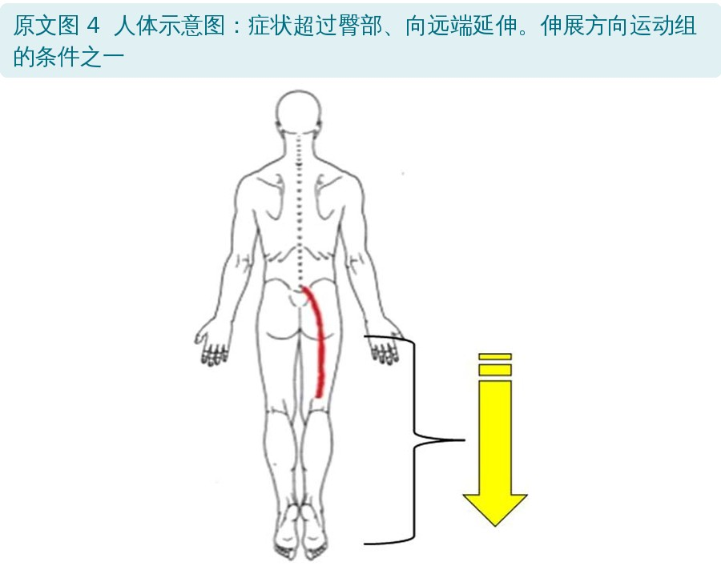
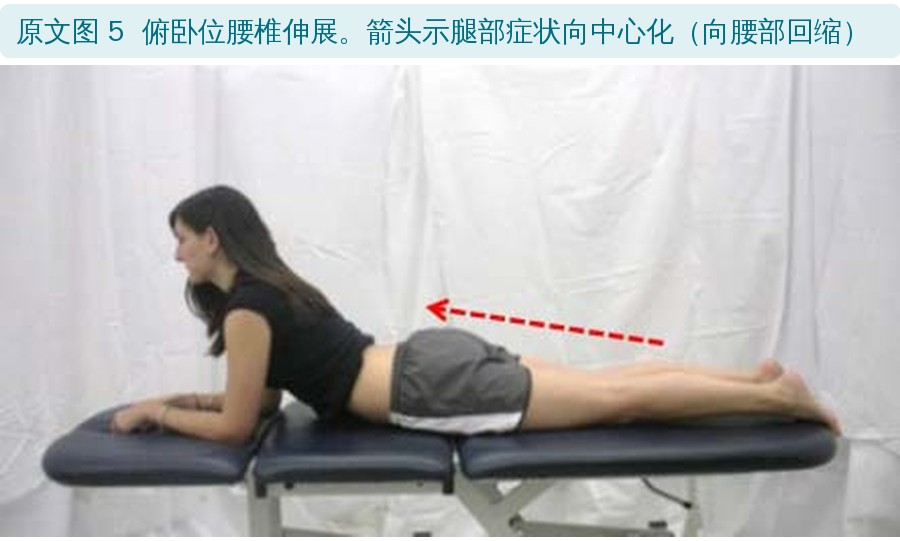
• 伸展：最常见的方向偏好，常提示椎间盘问题。系统综述显示，急性腰痛伴根性症状的人有 40%～56% 能通过伸展运动中心化。伴僵硬或疼痛时可加手法，最常用的是俯卧位非推扳的后前向松动；急性期暂时避免屈曲动作和姿势
• 侧移：腰椎间盘突出后可见的冠状面姿势偏移，多达 25% 的腰痛患者有侧移，预后较差。先评估冠状面主动活动，找出能让症状中心化的方向；动不了的可由治疗师被动辅助。有些人先把骨盆向左或右平移再做俯卧伸展，才能中心化
• 屈曲：最少见，常见于腰椎管狭窄的老年人。橄榄球前锋、赛艇、舞蹈和体操运动员椎体滑脱率较高，可能从屈曲运动中获益
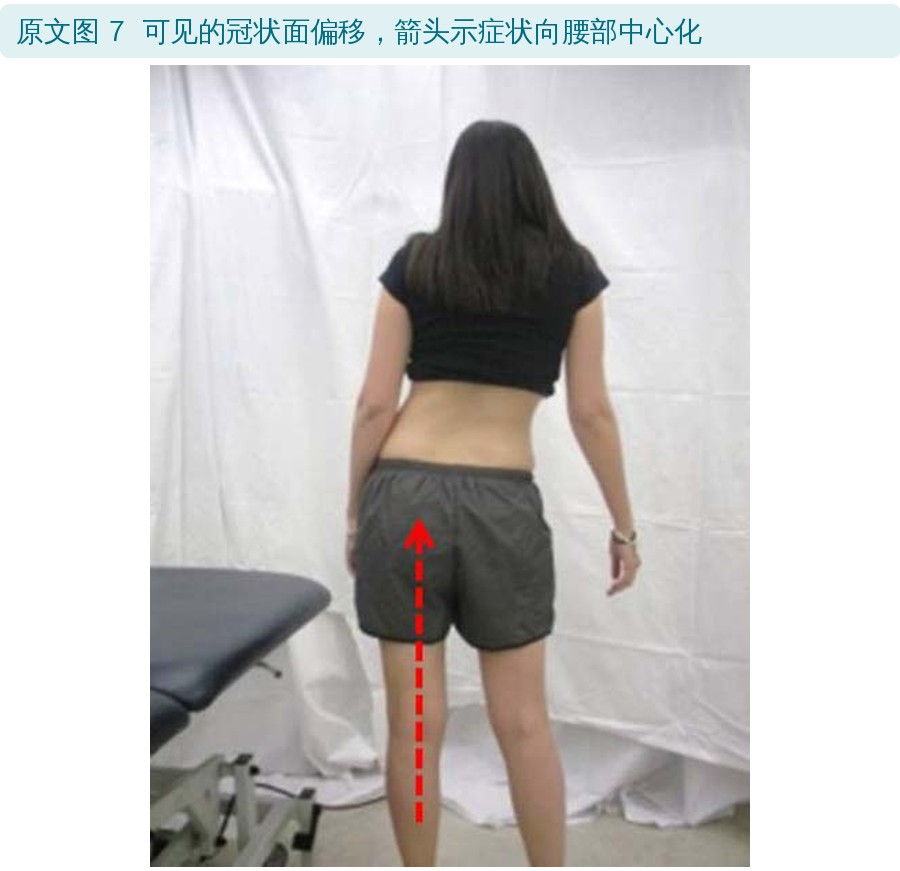
核心稳定训练能提升运动表现，但最佳方法没有共识。对运动员，可以分阶段进行：先做特定肌肉训练，再进阶到整体力量训练，最后加专项训练。
预测规则来自一项 54 名连续腰痛患者的研究（排除神经根受压和孕期腰痛）：做 8 周腰椎稳定训练，练腹横肌、多裂肌、竖脊肌、腰方肌和腹斜肌，每周 2 次监督训练加每天居家练习。三分之一的人改良 ODI 下降 ≥ 50%（平均下降 75%）。4 个预测因素：
• 年龄 < 40 岁
• 直腿抬高平均 ≥ 91°
• 异常动作：提示腰椎不稳，包括“不稳定卡顿”、撑大腿起身（Gower 征）、疼痛弧、腰骨盆节律反转
• 俯卧不稳定试验阳性：躯干趴在床上、双脚着地，检查者在各腰椎施加后前向压力；有痛的节段，让患者抬脚离地后再压一次，疼痛减轻为阳性
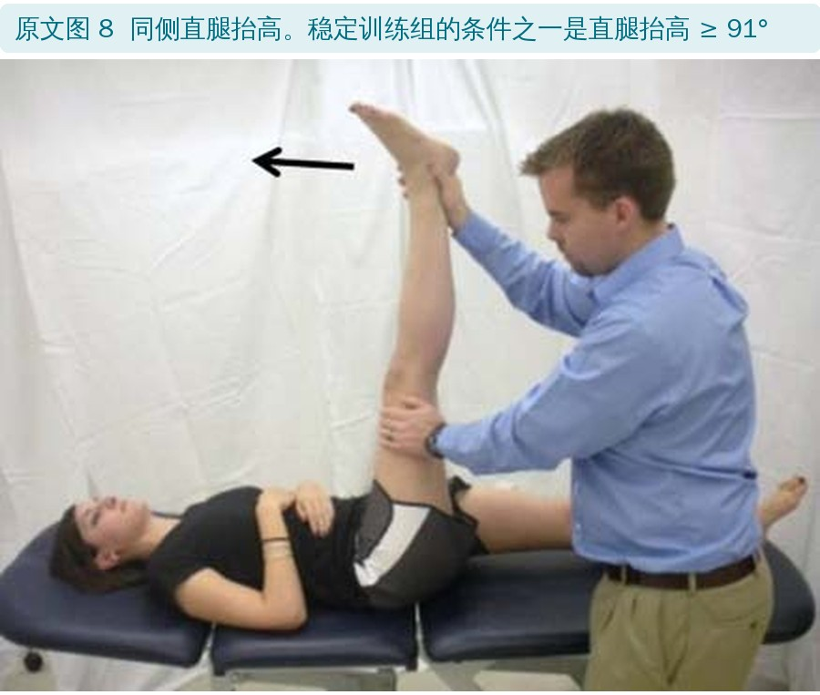
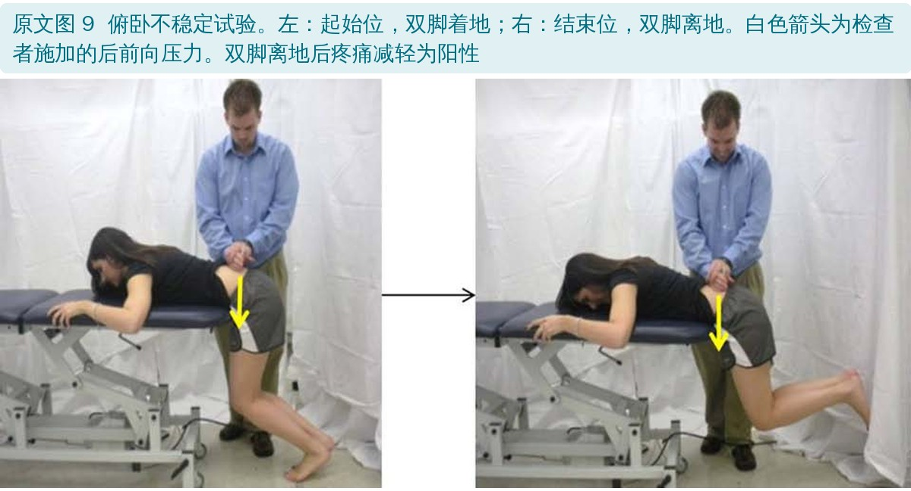
机械牵引没有任何临床指南推荐，但临床上用得很多。有研究提示一小部分患者可能适合牵引，但随机对照试验整体没有显示获益。有 4 个因素可能帮助判断谁适合牵引：有腿部症状、有神经根受压体征、伸展时外周化、交叉直腿抬高阳性。
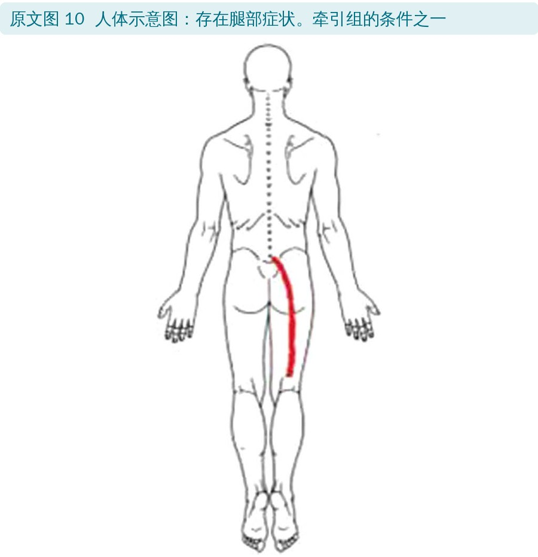
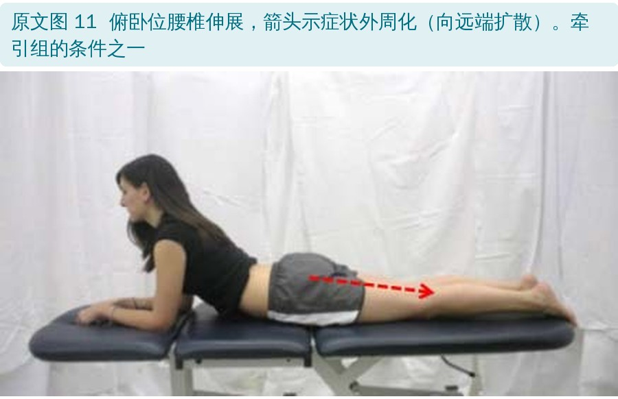
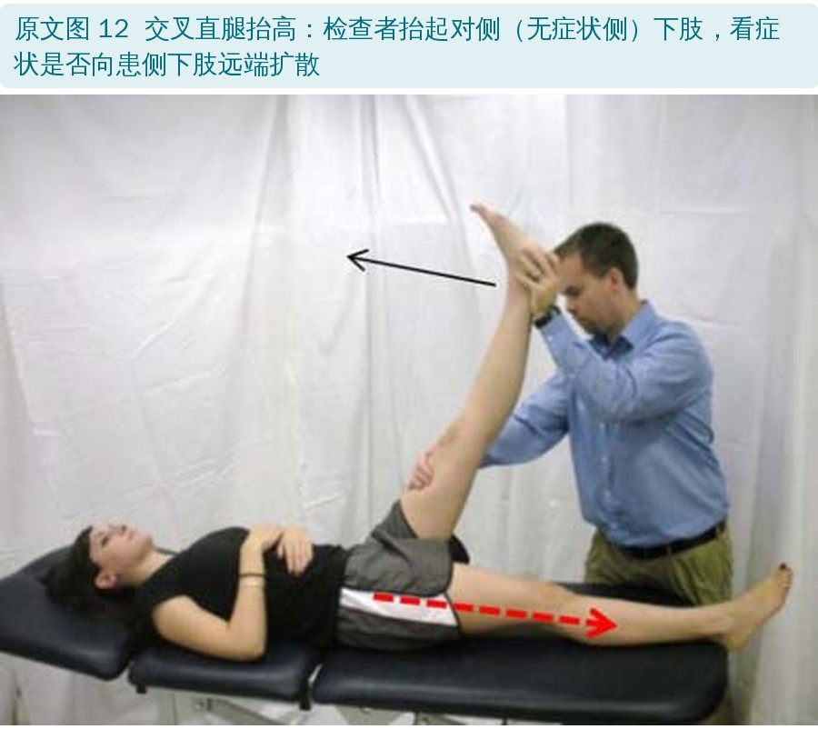
• 外周化：做腰椎伸展时，疼痛或麻木向远端移动。出现外周化的人预后较差，手术可能性更高
• 交叉直腿抬高：仰卧，检查者被动抬起对侧下肢的直腿；特异性高（0.85～0.94），敏感性低（0.22～0.35），也就是阳性很有意义，阴性却排除不了
作者坦言，Ⅱ、Ⅲ期运动员的最佳管理方法并不清楚。思路是针对柔韧性、力量、耐力和神经肌肉控制的不足，用运动和手法治疗；髋和胸椎的问题也可能参与腰痛，需要一并评估。
• 首选一套针对肌骨损害、并融入专项动作的综合运动方案，有助于减少腰痛复发
• 教育很关键：坚持训练、合理进阶、避免过度训练
• 急性腰痛时，建议和教育看起来有帮助，但对复发的影响证据不一致
"The treatment-based classification scheme provides the clinician with a reliable algorithm for matching an athlete's symptom presentation to the optimal intervention, potentially reducing participation loss."
"基于治疗分类的方案为临床医生提供了一套可靠的流程，把运动员的症状表现和最合适的干预对应起来，可能减少缺训缺赛。"
• 这是叙述性综述，不是系统综述：写了检索的数据库和关键词，但没有纳入标准、没有文献筛选流程，也没有偏倚风险评价
• “专门给运动员”的证据其实很少：引用的分类和预测规则研究几乎都来自普通腰痛人群（门诊、工伤、军人），作者自己也说 FABQ、Ⅱ/Ⅲ期管理在运动员里没有研究
• 结论说得有点满：摘要称 TBC 比临床指南“显著”降低失能和疼痛，依据主要是 2003 年（78 人）和 2006 年两项中小型随机试验（编者观点）
• 预测规则需要谨慎：手法规则有验证研究，但后来也有研究没能重复出效果；稳定训练和牵引的规则来自小样本推导研究，原文没有给出验证证据（编者观点）
• 时效性：文章发表于 2011 年，此后 TBC 体系本身也有修订，Ⅰ期四组的具体标准在后续文献里有调整（编者补充）
• 优点：流程清楚，从筛查、分期到干预都能落地；每个检查都配了照片，适合教学和临床速查
• 稳定组的年龄：表 4 和附录写“年龄 ≤ 40 岁”，正文写“年龄 < 40 岁”
• 交叉直腿抬高的阳性标准：正文说抬起对侧下肢、“对侧下肢出现症状”为阳性，读起来像是被抬那条腿有症状；图 12 的图注说的是症状向“同侧”（原本有症状的一侧）下肢外周化。按常规定义应以后者为准
• Ⅰ期和Ⅱ、Ⅲ期的 ODI 界值重叠：表 3 中Ⅰ期“≥ 20%”，Ⅱ、Ⅲ期“≤ 20%”，正好 20% 的人两边都符合；Ⅱ、Ⅲ期 ODI 标准完全相同，只能靠功能区分
• 附录少了屈曲组：表 4 把特定方向运动分为伸展、屈曲、侧移三组，附录只写了“伸展 / 侧移”
• 表 2 的脚注是空的：表 2 标了脚注 a，但脚注没有内容；其他表的 a 都是“改编自……”
• 手法规则的界值写法：本文写病程“≤ 16 天”、FABQ 工作分量表“≤ 19”，原始推导研究（Flynn 2002）常被引作“< 16 天”“< 19”，引用时最好核对原始文献（编者提示）
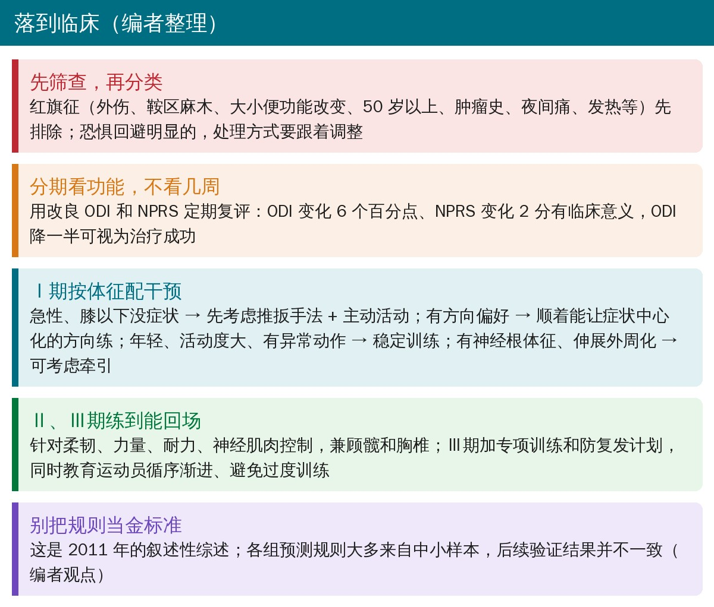
• 先排红旗：外伤、鞍区麻木、大小便改变、50 岁以上、肿瘤史、夜间痛、发热，有一项都要先查清楚再谈康复
• 年轻运动员伸展痛：先想到峡部应力性骨折和滑脱
• 用 ODI 和 NPRS 跟踪：既用来分期，也用来判断什么时候升期
• 急性、膝以下没症状的腰痛，可以优先考虑推扳手法；有方向偏好的，顺着能让症状中心化的方向练
• Ⅲ期别急着结束：能训练不代表恢复完全，专项训练和防复发计划才是回场的关键
欢迎关注骨科康复小黄公众号，获取更多物理治疗的专业知识！
📄参考文献：
Burns SA, Foresman E, Kraycsir SJ, Egan W, Glynn P, Mintken PE, Cleland JA. A treatment-based classification approach to examination and intervention of lumbar disorders. Sports Health. 2011;3(4):362-372. doi:10.1177/1941738111410378
原文 © 2011 The Author(s)，由 SAGE 出版，可在 PubMed Central（PMC3445202）免费阅读，但未采用知识共享（CC）开放许可。本文为学术交流用的中文解读：原文图 1～12 为照片和人体示意图，图内没有文字，原样引用（仅等比缩放），中文图注为编者翻译；表格为编者翻译；首图、三步流程卡、Ⅰ期分组速查卡、临床要点卡和封面为编者根据原文整理绘制。版权归原作者与出版方，仅供学习交流，如有侵权请联系删除。